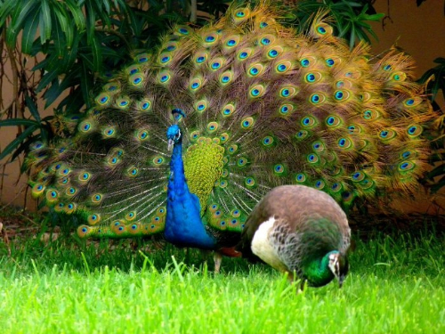
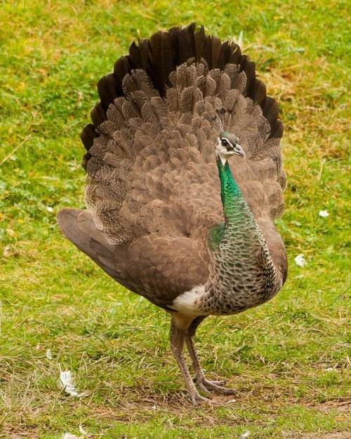

Peacocks are commonly found in Asia, Africa, and Australia. A peacock has a life span of twenty years. A peahen is a female peacock. A female peacock is called a peahen. The peahen lays three to six eggs. The mother will take care of the eggs for 29 days. The chicks stay with the peahen for the first few months, learning what to eat, how to care for their feathers, and how to communicate with other peacocks. Peahens mature earlier than males, and some mate when they are 1 year old. Others wait until the second year. The newly hatched chicks are born with flight feathers and are able to fly short distances within three days of hatching.
Even though a peacock is large, it can still fly. Peahens have brown feathers and shorter tails, which camouflage them and help them fly more easily than males. An average peacock can plumage its wings up to 5 feet and 4 inches. Their feathers are mostly brown, except for their cream-colored bellies and greenish-blue throats. Their tails are much shorter than males, and they can still unfold them into a fan; their feathers are not brightly colored. Male peacocks have very bright feathers with circles on them. A male often uses his traits for mating with peahens. Often times, most of their features do not attract the female peacock.
Peacocks eat almost everything. They search for insects, arthropods, small rodents, mammals, amphibians, and reptiles. They look for fruits, berries, seeds, grains, wild figs, drupes, seed heads, and flower petals, and are known to feed on cultivated crops as well.
In terms of appearence, male peacocks are far more colorful and showy.
Female peacocks look more dull and natural.
